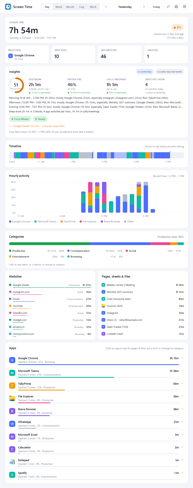
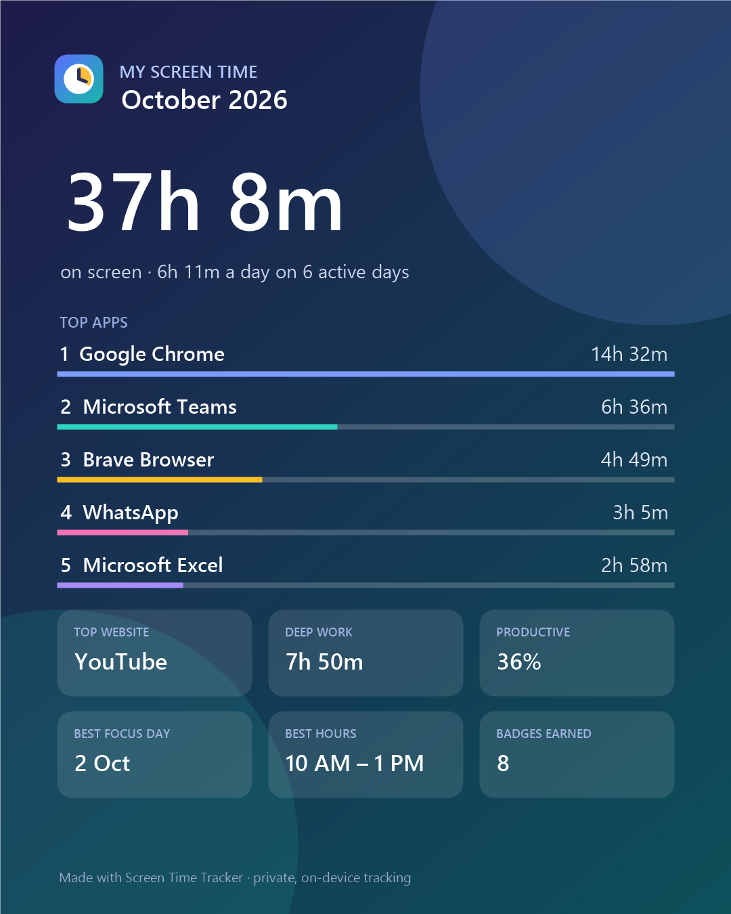

Screen Time Tracker quietly notes how long you use your PC – every app, website, Google Sheet and file – plus when you logged in and out. Open it any time, or get a neat PDF report of any day.
Free forever · about 2 MB · installs in under a minute · no admin rights needed

Install it once. It starts by itself in the background (if you want), and you can look at your day whenever you like.
Chrome, Brave, Excel, Tally, WhatsApp, even Calculator – how long, how often, and when.
Not just "Chrome" – it shows which website, which sheet, which file you were actually on.
When the PC started, when you began working, when you stopped – every day, even before you installed it.
One click gives a clean report of today, any day, a week or a month – ready to save, print or share.
Timelines, charts, a calendar and a full activity log – hover over anything to see the details.
Hides YouTube, Instagram and other distractions for 25, 50 or 90 minutes. Gives you a focus score.
Turns your screen time into hours per client or project, with amounts at your hourly rate.
Arrived, left, late, overtime – checked against your own work hours, month by month.
Gentle nudges for breaks, eye rest (20-20-20), water, and a heads-up when it's getting late.
Knows when you're on a call, so meetings count – even when you're not typing.
"When did I work on that invoice?" or "What was I doing at 3 PM on Tuesday?" – answered.
Everything stays on your own PC. No account, no cloud, no keystrokes, no screenshots.
No technical knowledge needed. You only do this once.
Click Download for Windows. A file called ScreenTimeTracker.zip arrives in your Downloads folder.
Right-click the zip file and choose Extract All…, then click Extract. A normal folder opens.
Double-click Install Screen Time Tracker. It takes a few seconds.
Pick whether it should start by itself every time you turn on your PC (recommended). Done!
It's your time – so it stays yours.

Bonus: make a shareable "Screen Time Wrapped" card of your month.
No. During installation you choose whether it starts by itself when you turn on your PC. If you said yes, it just runs quietly in the background. You can change this any time: right-click the clock icon near the time and click Start automatically with Windows.
No. If you don't touch the keyboard or mouse for 5 minutes, it stops counting (and removes those 5 minutes). If a video or call is playing, it keeps counting – because you're watching or talking.
Open the dashboard and click the printer button at the top, or right-click the clock icon and choose Export report (PDF). Pick a day, week, month or any dates. You can do this any time, even in the middle of the day.
No. It checks which window is in front once a second – a tiny job. It uses about as much power as a clock.
Chrome, Brave, Edge, Firefox, Opera and Vivaldi. It shows the website (like YouTube or Google Sheets) and the page or sheet name.
Yes. Install it on both. In Settings → Reports & data, point both to a shared folder such as OneDrive to see everything together.
Windows Settings → Apps → Installed apps → Screen Time Tracker → Uninstall. It asks whether to keep or delete your history.
Free, private and ready in a minute.